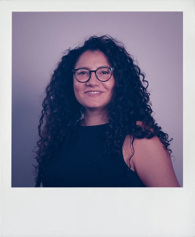

Animations
Video
Second semester exam project
Dankort
Videos
Lundbeck
About me
For some time, Little Sir and I have been learning and improving our skills in storytelling, animation, and graphic design. This is where all our good energy goes.
Previous work
- 2026 Lundbeck, Student Assistant, Communication & Public Affairs
- 2026 Story Lab, Egmont, Motion Graphics
- 2025 Mannaz, Graphic Designer
- 2022 Medidyne, Digital Marketing Coordinator

Annebeth FaurbyEducational background
- Multimediedesign, EK 2025–2027
- UX/UI design
- Graphic design
- Animation
- Video editing
- Content creation
- 2023 North Creative Academy
- Motion Graphics
- Adobe After Effects
- Visual storytelling
- Bachelor in Design & Business, KEA 2016
- Field of study: Living Design
- Human centered Design
- Product development
- Sketching & 3D drawing
Skills
- Visual Communication
- Graphic Design
- Motion Design
- Video Editing
- Storytelling
Programs
- Figma
- Creative Cloud (Ai, Id, Ae, Ps)
- Visual Studio Code
- Github
- PowerPoint
Language
Native Danish speaker with fluent English and confidence working in English-speaking environments.